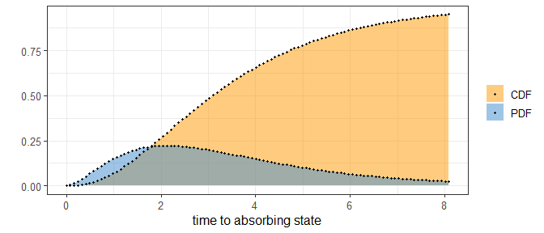
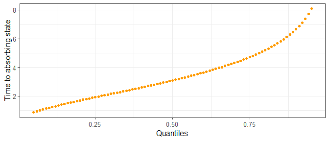
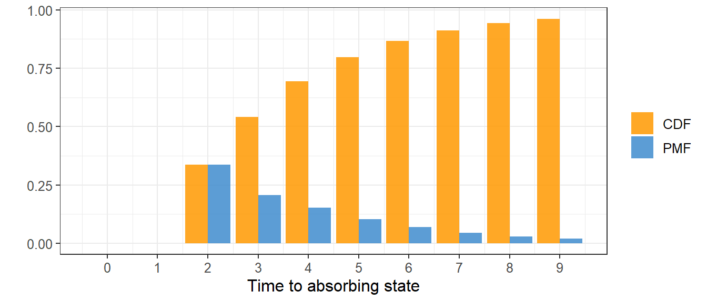
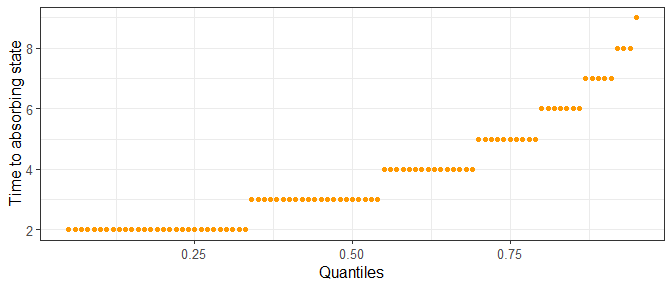
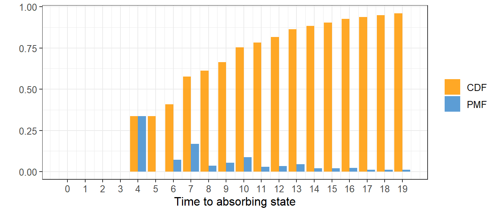

Informations
Please report any issues on the git page of the package
Most informations and details can be find in the book of Bladt and Nielsen (2017): Matrix-Exponential Distributions in Applied Probability and the PhD of Campillo Navarro (2019)
1. Introduction
Phase-type distributions are great mathematical tool especially in fields like insurance or population genetics.
The basic idea is considering a markov jump process (or a Markov chain for discrete cases) with \(n\) transient states and 1 absorbing state (i.e. once in the absorbing state, it cannot go out), you can have the time before reaching that absorbing state using the intensity matrix and the initial probabilities to start in each state. The matrix form of phase-type distribution allow great simplification, in particular to find the moments of the time before reaching the absorbing state.
The package phasty handle this phase-type distribution and the calculation behind it.
This package is a complete as possible, nevertheless, it stays a package which bring mathematical tools and its not oriented for a specific application.
The main references that have been used for this package are:
2. The phase-type S3 class objects
The functions provided by phasty requires object of class: disc_phase_type, cont_phase_type, mult_disc_phase_type or mult_cont_phase_type. Which can be obtain using phase_type(). here is an example considering a univariate continuous phase-type distribution:
subintensity_matrix <- matrix(c(-1.5, 0, 0, 1.5, -1, 0, 0, 1, -0.5), ncol = 3) initial_probabilities <- c(0.9, 0.1, 0) ph <- phase_type(subintensity_matrix, initial_probabilities) print(ph) #> $subint_mat #> [,1] [,2] [,3] #> [1,] -1.5 1.5 0.0 #> [2,] 0.0 -1.0 1.0 #> [3,] 0.0 0.0 -0.5 #> #> $init_probs #> [,1] [,2] [,3] #> [1,] 0.9 0.1 0 #> #> $defect #> [1] 0 #> #> attr(,"class") #> [1] "cont_phase_type"
With subint_mat the subintensity matrix and init_probs the vector of initials probabilities. An object of one of the phase_type class should have a subintensity matrix, a initial probability vector, a defect being the probability to start directly in the absorbing state, which can happens when using reward transformation (see section )) and the type of class.
The init_probs are optional in the inputs, in that case the probability to start in the first state will be 1.
3. The univariate distribution
3.1. The continuous univariate phase-type
Let consider \(\{X_t\}_{t\ge0}\) a Markov jump process (MJP) with \(n\) transient states and 1 absorbing state .
Let \(\tau\), the variable of the time where \(\{X_t\}_{t\ge0}\) reach the absorbing state, then \(\tau\) will follow a continuous phase-type distribution \(\tau \sim PH(\boldsymbol{T}, \boldsymbol{\pi})\), where \(\boldsymbol{T}\) is the subintensity matrix of the corresponding MJP and \(\boldsymbol{\pi}\) is the vector of starting probabilities.
In phasty, to define an phase-type distributed object, it requires to use the function phase_type(). This function will creates an S3 ‘cont_phase_type’ object and requires the subintensity matrix and a vector of initial probabilities. Note that NULL is a valid argument for the initial probabilities, in that case the inital probabilities will be \(\boldsymbol{\pi} = (1,\, 0,\, 0,\, ...\,,0)\).
subintensity_matrix <- matrix(c(-1.5, 0, 0, 1.5, -1, 0, 0, 1, -0.5), ncol = 3) initial_probabilities <- c(0.9, 0.1, 0) ph <- phase_type(subintensity_matrix, initial_probabilities) print(class(ph)) # Check that phase_type() recognise the cont_phase_type #> [1] "cont_phase_type"
With this object we can now calculate the mean and variance from theorem 3.1.16 and corollary 3.1.18 (Bladt and Nielsen 2017, 81:p.135).
the mean of a variable following a continuous phase type is define by:
\[ \mathbb{E} (\tau) = \boldsymbol{\pi U e} = \boldsymbol{\pi} (-\boldsymbol{T})^{-1} \boldsymbol{e} \] and from corollary 3.1.18 (Bladt and Nielsen 2017 page p.), the esperance of \(\tau^n\) is defined by
\[ \mathbb{E} (\tau^n) = n!\boldsymbol{\pi} (-\boldsymbol{T})^{-n} \boldsymbol{e} \] from this we can write the variance of \(\tau\) as:
\[ \mathbb{V} (\tau) = (2\boldsymbol{\pi} (-\boldsymbol{T})^{-2} \boldsymbol{e}) -(\boldsymbol{\pi} (-\boldsymbol{T})^{-1} \boldsymbol{e})^2 \]
This formula can be reach in phasty using the generic functions mean() and var() with a cont_phase_type object.
Let’s take the same example as before to see how to use the different functions:
cat('\n', 'Mean: ',mean(ph),'\n') #> #> Mean: 3.6 cat(' Variance: ',var(ph),'\n \n') #> Variance: 5.44 #>
The probability density function (PDF) of a continuous phase-type distribution is defined by equation 3.1.7 (Bladt and Nielsen 2017, 81:p.131):
\[ f(u) = \boldsymbol{\pi}e^{\boldsymbol{T}u}\boldsymbol{t} \] where \(\boldsymbol{t} = -\boldsymbol{T}\boldsymbol{e}\) is the exit rate of the subintensity matrix (the vector of transition from state \(i\) to the absorbing state). from there we can get the cdf
\[ F(u) = 1-\boldsymbol{\pi}e^{\boldsymbol{T}u}\boldsymbol{e} \]
x <- seq(0, qphtype(0.95, ph), length.out = 100) pdf <- dphtype(x, ph) cdf <- pphtype(x, ph) plot(x, cdf, xlab = "Time to absorbing state", ylab = "", col = "orange", type = 'l') lines(x, pdf, col = "blue") x <- seq(0.05, 0.95, 0.01) plot(x, qphtype(x, ph), col = "orange", ylab = "Time to absorbing state", xlab = "Quantile") cat('10 random samples: \n \n', rphtype(5, ph), '\n', rphtype(5, ph))


It is possible to give to each transient state a weight by a reward transformation, to do so we will use a reward vector of size \(p\)
r = c(1,0,4) Y = reward_phase_type(phase_type = X, reward = r) print(Y)
3.2. The discrete univariate phase-type
As it is possible to consider an MJP (also called continuous Markov chain), it is also possible to consider a Markov chain (MC). Let consider ${X_n} \(\tau \sim DPH(\boldsymbol{T}, \boldsymbol{\pi})\), where \(\tau \in \mathbb{N}\) and will count the number of states it will visit before ending in the absorbing state. For that reason, the subintensity matrix \(\boldsymbol{T}\) will not contains rates but probabilities, describing the probability to go from one state to another.
subintensity_matrix <- matrix(c(0, 0.2, 0.8, 0.5, 0.5, 0, 0, 0, 0.4), ncol = 3, byrow = T) initial_probabilities <- c(0.7, 0.3, 0) dph <- phase_type(subintensity_matrix, initial_probabilities) print(class(dph)) #> [1] "disc_phase_type"
As for the continuous phase-type, it is possible to describe any moment using the factorial moment using describe in proposition 2.7.iii (Navarro 2019, p.12) \[ \mathbb{E} (\tau(\tau - 1) ... (\tau-(n-1))) = n!\boldsymbol{\pi T}^{n-1} (\boldsymbol{I}-\boldsymbol{T})^{-n} \boldsymbol{e} \] This leads to a mean and variance: \[ \mathbb{E} (\tau) = \boldsymbol{\pi}(\boldsymbol{I}-\boldsymbol{T})^{-1}\boldsymbol{e} \\ \mathbb{V} (\tau) = 2\boldsymbol{\pi}\boldsymbol{T}(\boldsymbol{I}-\boldsymbol{T})^{-2}\boldsymbol{e} + \mathbb{E} (\tau) - \mathbb{E} (\tau)^2 \]
In phasty the mean and variance can be reach using
cat('\n', 'Mean: ',mean(dph),'\n') #> #> Mean: 4.016667 cat(' Variance: ',var(dph),'\n \n') #> Variance: 5.863611 #>
theorem 1.2.58 and 1.2.59 (Bladt and Nielsen 2017, 81:p.30) shows respectively that the density of a discrete phase-type distributed variable is
\[ f_\tau(n) = \boldsymbol{\pi T}^{n-1}\boldsymbol{t} \] and its distribution function is
\[ F_\tau(n) = 1-\boldsymbol{\pi T}^{n}\boldsymbol{e} \]
As for the continuous univariate phase-type, it is possible to reach this distribution by using the generic functions.
x <- seq(0, qphtype(0.95, dph), 1) pmf <- dphtype(x, dph) cdf <- pphtype(x, dph) data <- cbind(cdf, pmf) barplot(t(data), xlab = "Time to absorbing state", col = c("orange","blue"), beside = T) x <- seq(0.05, 0.95, 0.01) plot(x, qphtype(x, dph), col = "orange", ylab = "Time to absorbing state", xlab = "Quantile") # The following plots have been designed using ggplot2

3.3. The reward transformation
A reward transformation allow to give a weights to each state. Those wheights should be nonnegative (possibly zero).
3.3.1 Positive rewards for continuous phase-type distribution
Considering \(\tau \sim PH(\boldsymbol{T}, \boldsymbol{\pi})\) with \(\{X_t\}_{t \ge 0}\) the underlying Markov jump process, and the reward vector \(\boldsymbol{r} = (r_1,\ r_2,\ ...\,,\ r_n) \in \mathbb{R}^p_+\).
We can then set the new variable: \[ Y = \int^\tau_0 r(X_t)dt \] which corresponds to the wheighted time before absorption (or the reward earned until absorption). Given theorem 3.1.33 in Bladt and Nielsen, this new variable follow also a mixture of atom at zero of size \(\pi_{d+1}\), i.e. if there is at least one state \(i\), \(r(i) = 0\) and \(\pi_i > 0\), then there is a probability that the weighted time before absorption is \(Y = 0\) and a probability that ic can be continuous phase-type distributed that can be describe as: \[ Y \sim PH(\boldsymbol{T}^\star, \boldsymbol{\pi}^\star) \]
Getting \(\boldsymbol{T}^\star\) and \(\boldsymbol{\pi}^\star\) is rather simple if the given rewards only contains positive values, in that case, the rate will be divided by the corresponding rewards (\(\boldsymbol{T}^\star\) = \(\boldsymbol{Tr}\)) and the initial probabilities will not be modifiy (\(\boldsymbol{\pi}^\star\) = \(\boldsymbol{\pi}\)).
Taking the previous example and applying a reward vector = (1, 2, 3).
rph <- reward_phase_type(ph, c(1, 2, 3)) print(rph) #> $subint_mat #> [,1] [,2] [,3] #> [1,] -1.5 1.5 0.0000000 #> [2,] 0.0 -0.5 0.5000000 #> [3,] 0.0 0.0 -0.1666667 #> #> $init_probs #> [,1] [,2] [,3] #> [1,] 0.9 0.1 0 #> #> $defect #> [1] 0 #> #> attr(,"class") #> [1] "cont_phase_type"
x <- seq(0, qphtype(0.95, rph), length.out = 100) pdf <- dphtype(x, rph) cdf <- pphtype(x, rph) plot(x, cdf, xlab = "Time to absorbing state", ylab = "", col = "orange", type = 'l') lines(x, pdf, col = "blue")

3.3.2. Positive rewards for discrete phase-type distribution
In discrete phase-type distribution, the reward transformation can be achieved using intermadiate states as presented by Navarro (2019).
Considering \(\tau \sim DPH(\boldsymbol{T}, \boldsymbol{\pi})\) with \(\{X_n\}_{n \ge 0}\) the underlying Markov chain, and the reward vector \(\boldsymbol{r} = (r_1,\ r_2,\ ...\,,\ r_p) \in \mathbb{N}\). As for the continuous phase-type
\[ Y = \sum_{n=0}^{\tau - 1} r(X_n) \]
rdph <- reward_phase_type(dph, c(1, 2, 3)) print(rdph) #> $subint_mat #> [,1] [,2] [,3] [,4] [,5] [,6] #> [1,] 0.0 0.2 0 0.8 0 0 #> [2,] 0.0 0.0 1 0.0 0 0 #> [3,] 0.5 0.5 0 0.0 0 0 #> [4,] 0.0 0.0 0 0.0 1 0 #> [5,] 0.0 0.0 0 0.0 0 1 #> [6,] 0.0 0.0 0 0.4 0 0 #> #> $init_probs #> [,1] [,2] [,3] [,4] [,5] [,6] #> [1,] 0.7 0.3 0 0 0 0 #> #> $defect #> [1] 0 #> #> attr(,"class") #> [1] "disc_phase_type"
x <- seq(0, qphtype(0.95, rdph), 1) pmf <- dphtype(x, rdph) cdf <- pphtype(x, rdph) data <- cbind(cdf, pmf) barplot(t(data), xlab = "Time to absorbing state", col = c("orange","blue"), beside = T)

3.3.3. Dealing with zero rewards
To perform a reward transformation with at least one reward of zero, it is necessary to transform the subintensity matrix and initial probabilities by removing the zero rewarded state and then apply the positive rewards on the remaining states.
Theorem 3.1.33 (Bladt and Nielsen 2017, 81:p.147) describes the intermediates matrix \(\boldsymbol{P}\) define by
\[ \boldsymbol{P} = \boldsymbol{Q}^{++} + \boldsymbol{Q}^{+0} \, (\boldsymbol{I} - \boldsymbol{Q}^{+0})^{-1} \ \boldsymbol{Q}^{0+} \] Where \(\boldsymbol{Q}\) is the reorganisation of \(\boldsymbol{T}\) which gives:
\[ \boldsymbol{Q} = \left(\begin{array}{cc} \boldsymbol{Q}^{++} & \boldsymbol{Q}^{+0}\\ \boldsymbol{Q}^{+0} & \boldsymbol{Q}^{00} \end{array}\right) \]
Where the powers of the submatrices are the transition rate or probabilities between states with positive (+) or null reward (0) and positive or null (e.g. \(\boldsymbol{Q}^{0+}\), is the submatrix which gather the transition rates or probabilities between states with a reward of zero and states with a positive reward). Also from a phase-type perspective, for any \(\tau \sim PH(\boldsymbol{T}, \boldsymbol{\pi})\) then \(\tau \sim PH(\boldsymbol{Q}, \boldsymbol{\rho})\) with \(\rho\) the reorder initial probabilities. This is because the order of the states in the matrix does not matter.
Let’s apply a reward of \(\boldsymbol{r} = (0,\ 2,\ 3)\) to the example discrete phase-type example.
Applying the zero reward to the first state will give
zero_dph <- reward_phase_type(dph, c(0, 1, 1)) print(zero_dph) #> $subint_mat #> [,1] [,2] #> [1,] 0.6 0.4 #> [2,] 0.0 0.4 #> #> $init_probs #> [,1] [,2] #> [1,] 0.44 0.56 #> #> $defect #> [1] 1.110223e-16 #> #> attr(,"class") #> [1] "disc_phase_type"
Also because of computational approximation on matrix calculation, the defect is slighlty positive where it should be zero.
Then the positive rewards are apply from this new phase-type like in the previous section
reward_phase_type(zero_dph, c(2, 3)) #> $subint_mat #> [,1] [,2] [,3] [,4] [,5] #> [1,] 0.0 1 0.0 0 0 #> [2,] 0.6 0 0.4 0 0 #> [3,] 0.0 0 0.0 1 0 #> [4,] 0.0 0 0.0 0 1 #> [5,] 0.0 0 0.4 0 0 #> #> $init_probs #> [,1] [,2] [,3] [,4] [,5] #> [1,] 0.44 0 0.56 0 0 #> #> $defect #> [1] 1.110223e-16 #> #> attr(,"class") #> [1] "disc_phase_type"
This is obviously possible to do it in one step with
#> $subint_mat
#> [,1] [,2] [,3] [,4] [,5]
#> [1,] 0.0 1 0.0 0 0
#> [2,] 0.6 0 0.4 0 0
#> [3,] 0.0 0 0.0 1 0
#> [4,] 0.0 0 0.0 0 1
#> [5,] 0.0 0 0.4 0 0
#>
#> $init_probs
#> [,1] [,2] [,3] [,4] [,5]
#> [1,] 0.44 0 0.56 0 0
#>
#> $defect
#> [1] 1.110223e-16
#>
#> attr(,"class")
#> [1] "disc_phase_type"3.3.4. The variable reward in discrete phase-type
Recently unpusblished results from A. Hobolth et al. leads to think at an expansion of the reward for DPH. At each arrival in a new state the reward of this state is randomly chosen using a vector of probability Applying variable reward in the discrete case is relatively easy because of the construction of the reward transformation in discrete phase-type.
Consider the previous example and we want for state 1 a reward of 2 with probability 0.5 of state and a reward of 1 with probability 0.5. Which would lead to
\[
\boldsymbol{T} =
\begin{bmatrix}
0 & 1 & 0 & 0 \\
0 & 0 & 0.2 & 0.8 \\
0.25 & 0.25 & 0.5 & 0 \\
0 & 0 & 0 & 0.4
\end{bmatrix}
\] \[
\boldsymbol{\pi} = (0.35,\ 0.35,\ 0.3,\ 0)
\] In phasty this can be reach using a matrix of probability rather than a vector. Note that this matrix is not the same as in the phase_type() function, since the disc_phase_type object stays univariate.
4. The multivariate phase-type distribution
4.1. The continuous multivariate phase-type
For details see section 8.1 (Bladt and Nielsen 2017, 81:p.438).
Let \(\tau \sim PH(\boldsymbol{T}, \boldsymbol{\pi})\) with \(\{X_t\}_{t \ge 0}\) the underlying Markov jumpe process and \(\boldsymbol{R}\) a matrix of size \(p\times n\), then the variable \(\boldsymbol{Y} \sim MPH^*_p(\boldsymbol{T},\ \boldsymbol{\pi},\ \boldsymbol{R})\) is the vector \(\boldsymbol{Y} = (Y_1,\ Y_2,\ ...\,,\ Y_n)\) where \(Y_i\) will corresponds to
\[ Y_j = \int_0^\tau r_j(X_t)dt \] i.e. the reward transformation of and using \(r_j\).
4.1.1 The moments
From theorem 8.1.5 (Bladt and Nielsen 2017, 81:p.440), the bivariate moment of an \(MPH^*\) distributed variable is given by
$$ (Y_j Y_k) = (_j)_k + (_j)_i
$$
and from there it is easy to reach the covariance using
\[ \mathrm{Cov} = \mathbb{E}(Y_j Y_k) - \mathbb{E}(Y_j)\mathbb{E}(Y_k) \]
4.2 The discrete multivariate phase-type
The discrete phase-type distribution is really similar to the continuous one with more details available in section 5.2 (Navarro 2019, p.79). The same constructionas for the continuous will be use so we can just write \(\boldsymbol{Y} = (Y_1,\ Y_2,\ ...\,,\ Y_n)\) where \(Y_i\) will corresponds to
\[
Y_j = \sum_0^n r_j(X_n)
\] Using the phase_type() function with the reward matrix in the reward_mat parameter
R <- matrix(c(0, 1, 1, 2, 1, 5, 0, 1, 10), ncol = 3) mdph <- phase_type(dph$subint_mat, dph$init_probs, reward_mat = R) print(mdph) #> $subint_mat #> [,1] [,2] [,3] #> [1,] 0.0 0.2 0.8 #> [2,] 0.5 0.5 0.0 #> [3,] 0.0 0.0 0.4 #> #> $init_probs #> [,1] [,2] [,3] #> [1,] 0.7 0.3 0 #> #> $reward_mat #> [,1] [,2] [,3] #> [1,] 0 2 0 #> [2,] 1 1 1 #> [3,] 1 5 10 #> #> $defect #> [1] 0 #> #> attr(,"class") #> [1] "mult_disc_phase_type"
4.2.1 The moments
from Proposition 5.7 (Navarro 2019, p.85) we get that the cross moment in the bivariate case is \[ \mathbb{E}(Y_j Y_k) = \boldsymbol{\pi} \left\{\boldsymbol{U\Delta}(\boldsymbol{r}_j)\boldsymbol{U\Delta}(\boldsymbol{r}_k) + \boldsymbol{U\Delta}(\boldsymbol{r}_k)\boldsymbol{U\Delta}(\boldsymbol{r}_j) - \boldsymbol{U\Delta}(\boldsymbol{r}_j)\boldsymbol{\Delta}(\boldsymbol{r}_k)\right\}\boldsymbol{e}. \]
and the covariance is given by \[ \mathrm{Cov}(Y_j,\,Y_k) = \boldsymbol{\pi} \left\{\boldsymbol{U\Delta}(\boldsymbol{r}_j)\boldsymbol{U\Delta}(\boldsymbol{r}_k) + \boldsymbol{U\Delta}(\boldsymbol{r}_k)\boldsymbol{U\Delta}(\boldsymbol{r}_j) \\- \boldsymbol{U\Delta}(\boldsymbol{r}_j)\boldsymbol{\Delta}(\boldsymbol{r}_k) - \boldsymbol{U\Delta}(\boldsymbol{r}_j)\boldsymbol{e\pi U\Delta}(\boldsymbol{r}_k) \right\}\boldsymbol{e}. \]
Which can be reach in phasty using the var which gives the covariance matrix
var(mdph) #> [,1] [,2] [,3] #> [1,] 19.61000 76.02667 112.6100 #> [2,] 76.02667 319.52667 484.0267 #> [3,] 112.61000 484.02667 745.6100
And mean gives the mean of each reward transformation
mean(mdph) #> [1] 2.766667 11.933333 17.766667
Additional functions
Get one simulation from a phase-type
To get one simulation of the corresponding MC or MJP from a discrete or continuous phase-type distribution respectively, the function sim_phase_type(obj, R = 100) can be call. With obj an object of the class from phasty and R the number of simulation.
The output will be a list with ([[1]]) the vector of the number of step (MC) or spending time (MJP) and ([[2]]) the vector of corresponding state visited .
set.seed(42) sim_phase_type(ph) #> [[1]] #> [1] 0.1983368 0.0763838 #> #> [[2]] #> [1] 2 3 set.seed(42) sim_phase_type(dph) #> [[1]] #> [1] 2 1 4 1 2 #> #> [[2]] #> [1] 2 1 2 1 3
TODO CODE CORRECTIONS NOT MC NOW For a reward transform MC we advise to use the sim_rew_phase_type() function, because the reward transformation add intermediate states which will be count in the simulation as separate state. Note that this function can also be use for cont_phase_type object but the ouput will be the same as using sim_phase_type() with a pretransformed MJP.
References
Bladt, Mogens, and Bo Friis Nielsen. 2017. Matrix-Exponential Distributions in Applied Probability. Vol. 81. https://doi.org/10.1007/978-1-4939-7049-0.